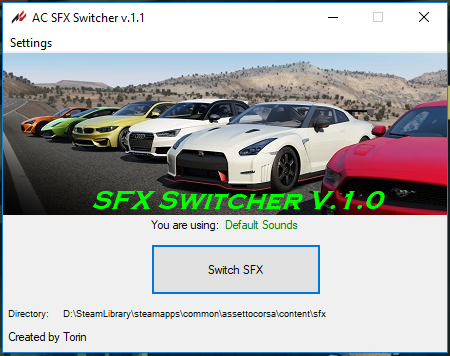
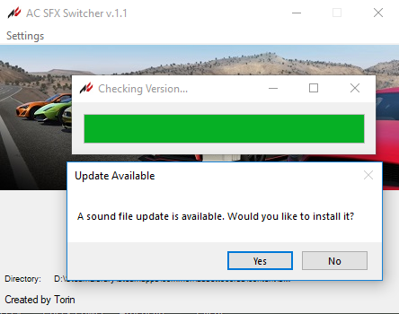

Torin Martin
I am a second year NSCC student in the IT Programming course seeking a workterm or employment. I enjoy creating software using various languages however I am particularly fond of C#. I also have experience in C++, Python, Javascript and Java.
This webpage is placeholder template and will be updated in the future.
Work Experience
Tire & Lube Technician
Tire installation, balancing, repairs, oil changes, battery installation.
Technician
Tire installation, balancing, repairs, oil changes. Passenger and commercial vehicles.
Tire & Lube Technician
Tire installation, balancing, repairs, oil changes, battery installation.
Employee
Warehousing, Cashier, Merchandising.
Dishwasher
Food preparation, dish washing, general cleaning, kitchen duties.
Counter Attendant
Food preparation, cashier, serving customers, general cleaning.
Education
Nova Scotia Community College
Center For Arts and Technology
Graduated. Program focusing on web development. Mostly focused on PHP, HTML5, CSS3, MySQL. However we also touched on Java and Python.
Halifax West High School
Graduated 2013
Projects
SCUM Server Listener GUI

Simple web scraper application built in C# to display server data about a specific game server. The application calls an external API, parses the JSON returned and displays the information. It also features a function to ping the game server directly. The source may be viewed on GitHub
Assetto Corsa SFX Switcher
 C# Application to switch between default and modded sound files for racing video game. Includes an option to download and install and in-game version of the app. 900+ Downloads. Source code will be made available soon.
Assetto Corsa SFX Switcher In Game
Python application which offers the user the same functionality of the project listed above, however available in game without minimizing. 1100+ Downloads. Source code will be made available soon.